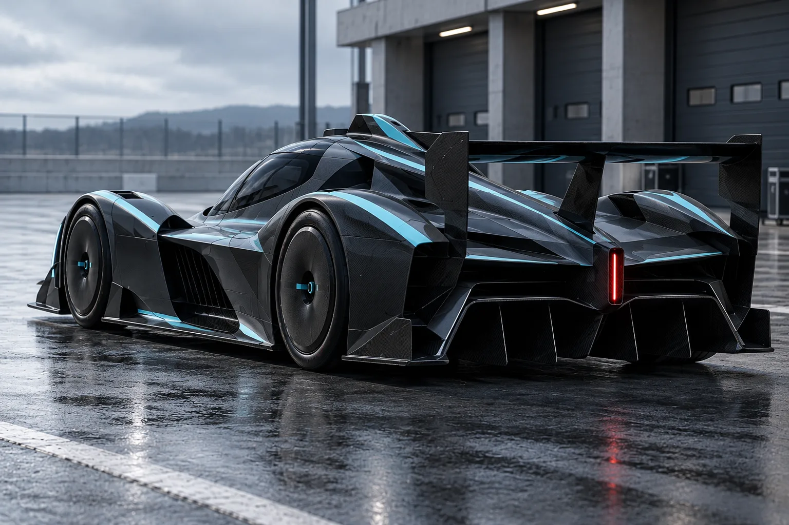

TEAM 06 / THE 2032 GRIDNORWAY
BOREAL.
Calm at maximum velocity.

THE TEAMONE MACHINE.
ONE MACHINE.
A UNIQUE MINDSET.
Cold calculation, exceptional efficiency, and exact execution.
Two drivers. One shared championship platform. A distinct approach to every race weekend.
THE LINE-UPMEET THE